PyCon US - Historia en 3 actos
Ya finalizó la PyCon US. Tuve la duda sobre hacer un post corto o uno largo. Finalmente me incliné por el post con más detalles porque quiero poder releerlo más adelante y recordar todo lo que sucedió durante el evento, y porque creo que de esa manera otras personas podrán imaginarse mejor el evento. ¡Pasó tanto en tan poco tiempo! Me cuesta creer que fueron sólo 3 días, y no una semana entera.
Viernes:
El primer día, caminando por el centro de convenciones, me sorprendió del tamaño del evento. El espacio principal es gigantesco. Y los salones de presentación también, son verdaderamente enormes. Mi hotel -carísimo pero auspiciado por la PSF- tenía conexión directa con el centro de eventos lo que era muy cómodo.
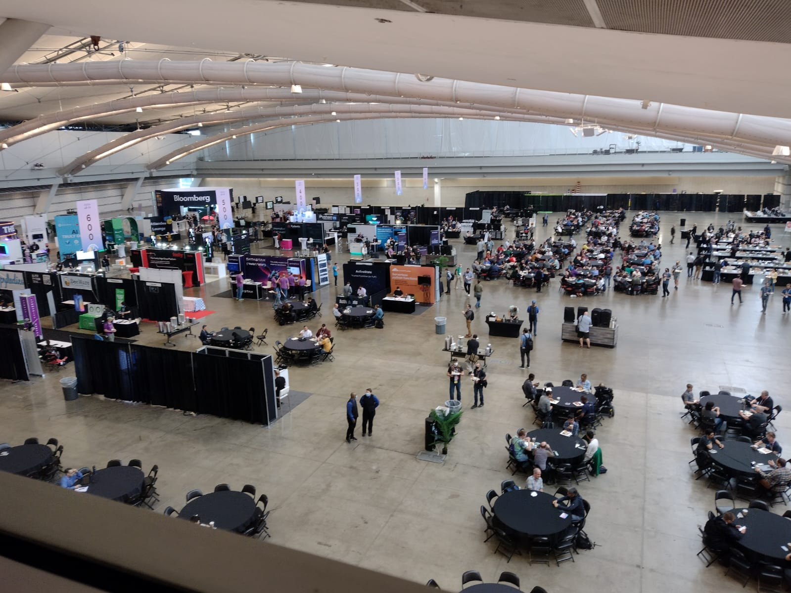
En la foto, se ve el espacio principal del piso 2 que tenía posters, booths de empresas, startups y comunidades, y el servicio de alimentación. En el mismo piso estaba el salón principal donde se hacían las keynotes y las lightining talk. En el piso 3, estaban los salones de las talks y de las charlas. Sí, hay una diferencia. Habían 4 salones para talks (charlas en inglés) y una sala para charlas (charlas en español). Además, en el piso 3 había una green room, una sala para que los speakers fueran a probar sus conexiones y practicar. Como speaker, tenía derecho a pasar ahí cuando quisiera, lo que era práctico para sacar café cuando se había agotado en otros lados.
Durante la mañana del viernes hice mi registro en el evento, y me pasaron el badge con mi nombre, stickers y polera. La polera me quedó pequeñísima (L fitted << regular M), pero afortunadamente pude cambiarla el domingo. Ya durante el desayuno, la cosa ya mostraba que no sería un evento cualquiera: a la distancia vi a Guido Van Rossum, el mismísimo creador de Python. Sí, también es humano. Increíble. Resistí el impulso de sacar una foto porque soy orgulloso (y ya me habían advertido de no paparazearlo).
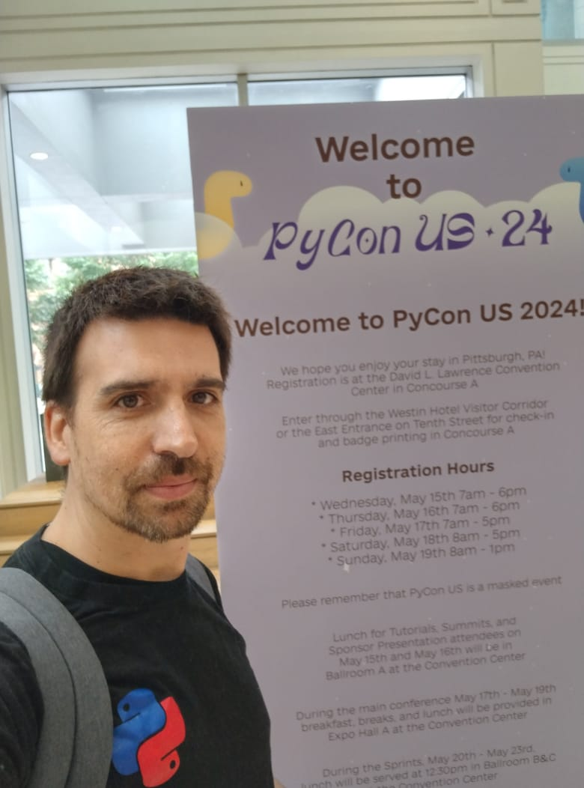
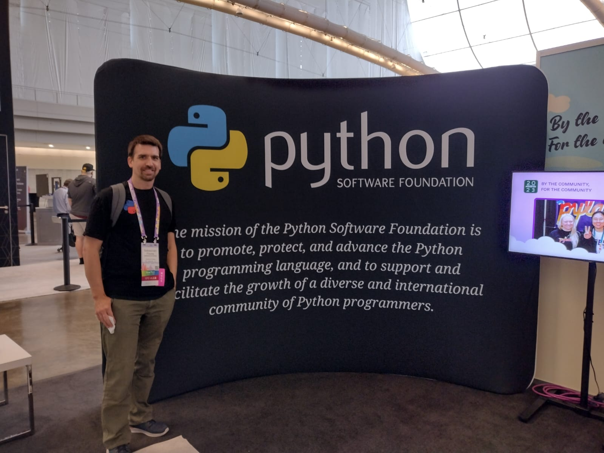
Durante la mañana me junté con Denny y Cristián, con quienes he conversado y colaborado en línea por Python Chile durante años, pero que nunca nos habíamos visto en persona. Y fue como si ya nos conociéramos y nos hubiéramos visto siempre. Estuve en el stand (booth) de Python en español, conociendo otros pythonistas, entregando stickers y recibiendo stickers. También fui a la inauguración de la Pycon, y a la primera Keynote.
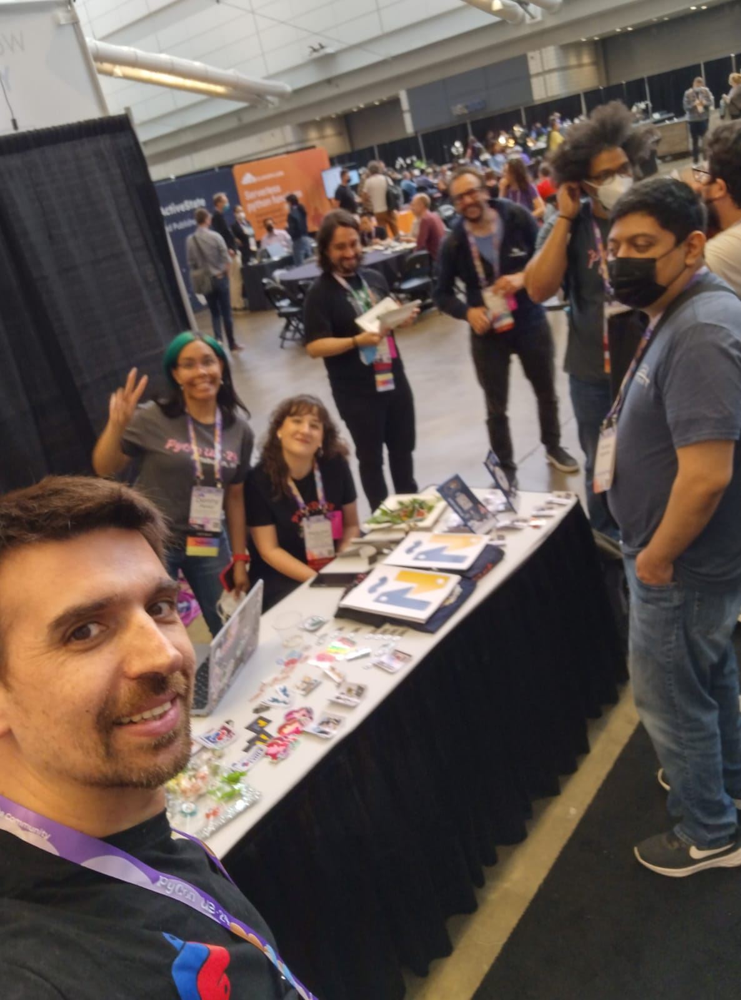
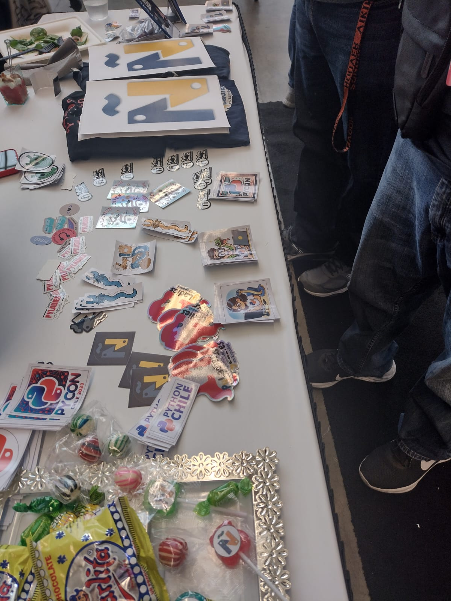
También pasé por el stand de Streamlit, y aproveché de saludar Chanin, Tony, Cristine, Ted y Krista, a quienes también solo conocía virtualmente. Me sorprendió el cariño con el que me saludaron y me recibieron. Me hubiera gustado hablar más con ellos y expresarles también mi agradecimiento, pero creo que la mezcla de cansancio, falta de sueño y estado de permanente de asombro limitaba mi capacidad de expresarme en inglés. Recién el sábado, después de charla, logré relajarme y disfrutar realmente.
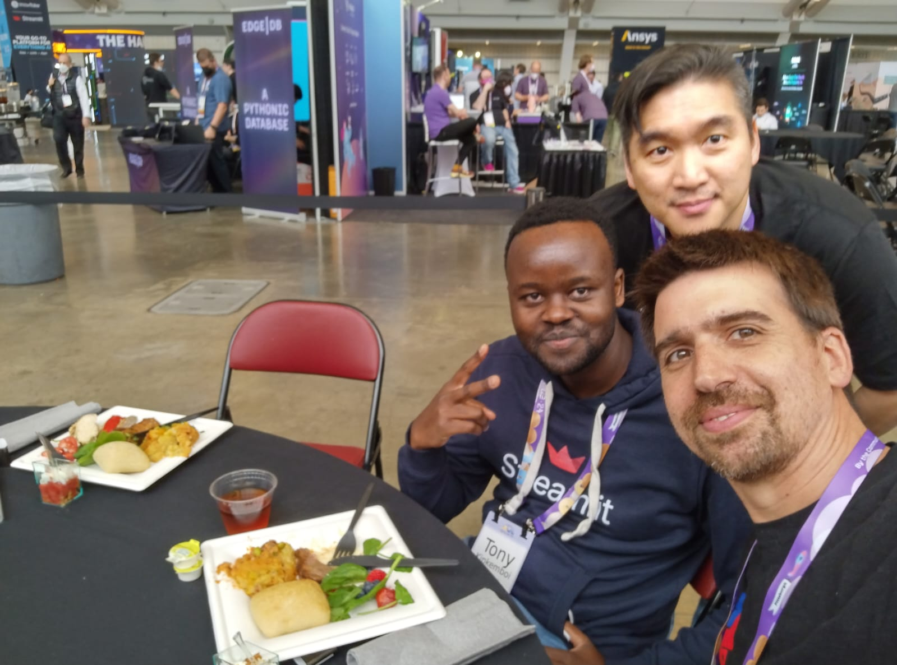
Chanin - Data Prof - me hizo una entrevista de la cual rescató algunos momentos coherentes.
Después de la keynote, me repartí entre pasearme entre los stands, recogiendo poleras y stickers, y ver algunas charlas. Había un stand que tenía unos puzzles a resolver y que regalaban unas poleras que me gustaban, pero que estaba siempre con mucha gente, así decidí pasar al día siguiente.
Durante las lightning talks, tipo 6 pm, me di cuenta que estaba agotado mental y emocionalmente. Decidí salir a caminar para relajarme y conocer un poco los alrededores, y comprar algo para la cena. Me di cuenta que necesitaba descansar para poder hacer una buena presentación al día siguiente. Finalmente terminé cenando en el hotel, a pesar de haber caminado los alrededores buscando una mejor alternativa (3 mini-hamburguesas). Ya de vuelta en la habitación, estuve ensayando y trabajando en los últimos cambios en la presentación entre las 8 y las 11 pm. Mis speaker notes tenían cada palabra que tenía que decir e incluso el momento de hacer cada click/next en la presentación. Me derrumbé en la cama y dormí profundamente.
Sábado:
El día partió temprano, con un desayuno liviano debido a mis nervios pre-presentación. Fui a la Keynote de Simon Willison, que fue increíble y recomendaré a todos apenas esté disponible en youtube. Simon explica como funcionan los LLMs de manera didáctica y divertida, destacando todas sus limitaciones pero también la increíbles cosas que nos permiten hacer (que no eran posibles antes).
A mediodía, di mi charla en inglés en un salón enorme y llenísimo. Para ser honesto, estaba increíblemente nervioso. Justo antes de subir al escenario, me di cuenta de que no tenía ni una sola línea de Python en mi presentación!!! Afortunadamente, ya era demasiado tarde para cambiar nada. Sabía que había preparado buen material y notas para apoyarme.
La recepción ha sido tremendamente positiva. Creo que Storytelling realmente conecta con la gente porque es un concepto muy intuitivo y poderoso. Todos queremos mejorar la forma en que comunicamos nuestras ideas. Escuchar a la gente decir: “Gracias por señalarme la biblioteca X, me encanta” o “Quería seguir aprendiendo, así que compré el libro Y” me hace muy feliz.
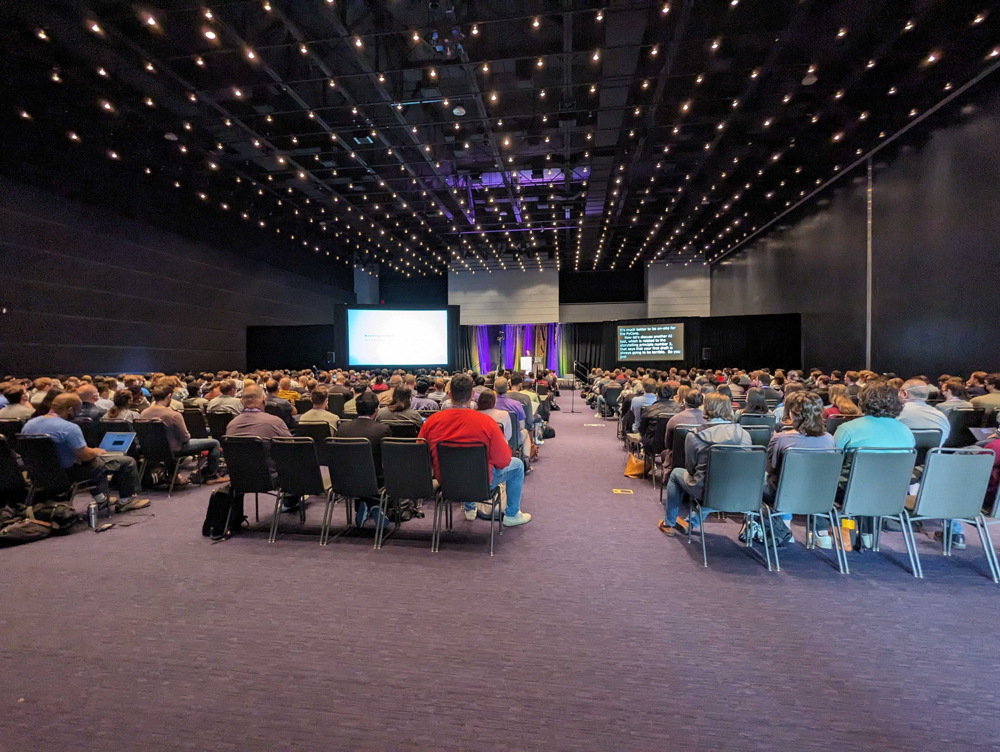
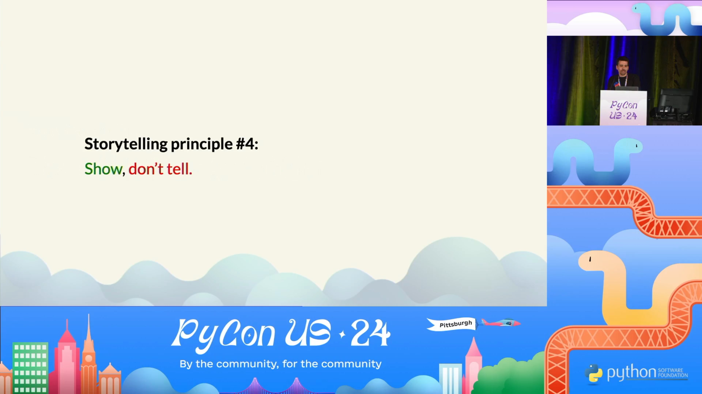
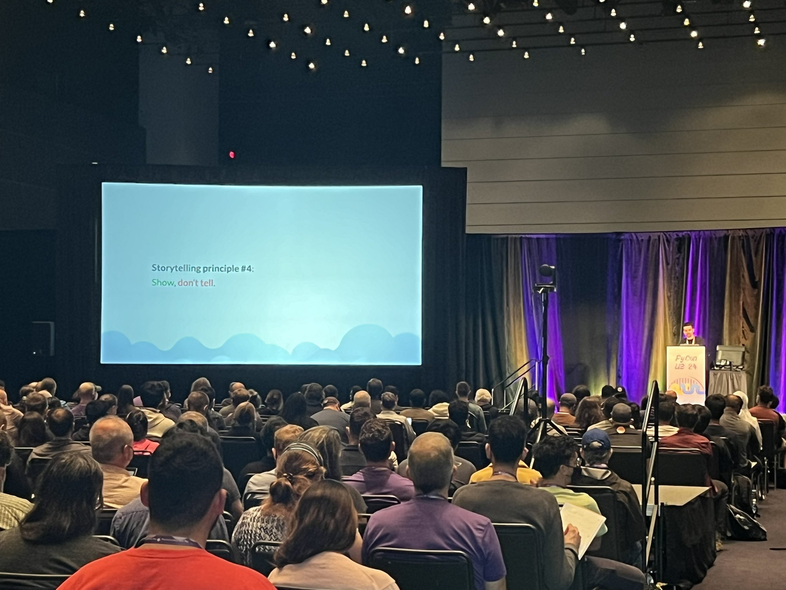
En la presentación incluí una encuesta, que respondieron +30 personas. La evaluación es enormemente positiva, y las pocas sugerencias de mejora son:
- Tengo que sonreir más
- Tengo que modular mejor y usar más tonos, no hablar tan plano.
- El final fue un poco abrupto.
- La agenda (tabla de contenidos) puede usarse para generar más interés.
Después de la charla, aproveché de relajarme y ver algunas charlas. También conversé con algunas personas que se me acercaron a comentar sobre mi presentación, a intercambiar recomendaciones de libros o simplemente a presentarse.
¿Recuerdan el stand con las poleras que quería? Por la tarde pasé y había poca gente. Habían 3 desafíos distintos, y al resolver cada uno obtenías un codigo de 4 cifras que te servía para abrir un candado en una caja. Mientras me explicaban las reglas, les pregunté en modo broma si se valía abrir el candado sin resolver el puzzle, y me miraron con cara de ¿de verdad puedes hacer eso? Así que les mostré que en realidad es super fácil (había visto un tutorial hace algunos años) y logré abrir el candado en cerca de 1 minuto. Se rieron mucho y me regalaron igual la polera (no llegué a aprender de que trataban los puzzles a resolver). Me sentí muy “street smart”, jajaja.
Como el día anterior, alterné entre ir a charlas, ir a los stands y hacer networking. Conocí mucha gente interesante. Al almuerzo, conocí un ingeniero de Duolingo que trabajaba en Pittsburgh y a un recién egresado que estaba recién aprendiendo Python. La diversidad misma de perfiles y conocimientos. Y me encanta que no haya prejuicio sobre el nivel de tus conocimientos, porque hay tanto por aprender que todos somos newbies en algún aspecto o librería de Python. Todos estamos siempre aprendiendo algo.
Volví a dejar mi computador al hotel, y me vestí de gala para la subasta de PyLadies. La “PyLadies auction” es muy divertida y ruidosa, pero al mismo tiempo elegante e íntima. Se sirve un menú de varios tiempos, con comida muy buena. Mientras tanto, se van subastando distintos items donados por gente de la misma comunidad. Python Chile había donado uno de los recuerdos de la PyCon Chile 2023 (el ascensor con manivela), que terminó vendiéndose por 425 dólares - yo sólo esperaba que fuera más que 100 dólares. Fueron 44 items a subastar, entre los cuales destacaban: una serpiente de peluche gigante (3 o 4 metros), una maleta con los logos de todos los capítulos de PyLadies del mundo, y un reloj cucú con temática de Python. En total, se recaudaron más de 60,000 dólares.
Despues del evento de PyLadies, con gente de distintas comunidades en español salimos a tomar cerveza y celebrar el cumpleaños de Cristián. Creo que volví al hotel cerca de las 2 am.
Domingo
Me levanté temprano porque me había comprometido a presentar una slide de PyDay Chile durante las lighting talk a las 8 am. Me di el gusto de partir diciendo “¿Que tal, festival?” que seguramente solo cuarentones chilenos entenderán como referencia.
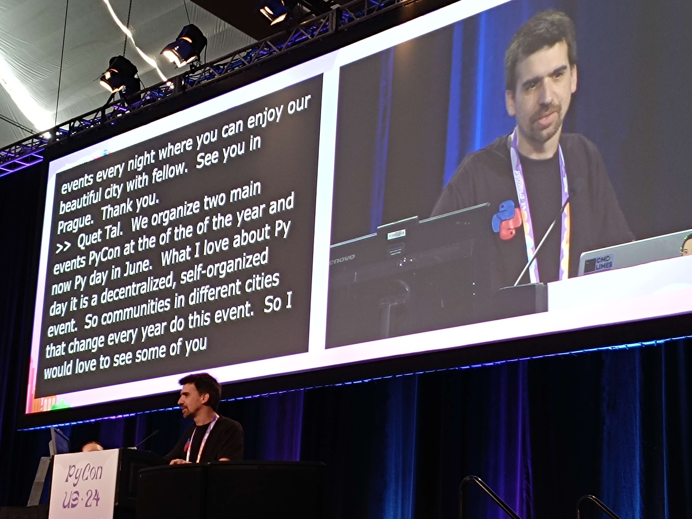
Ya el domingo se veía menos gente en el evento, muchas personas circulaban con su maletas. Ya se habían retirado los stands de las empresas, startups y comunidades, y la atención se concentraba en la feria de trabajo y los posters. Me pareció destable el trabajo sobre “algorithmic embroidery” por lo artístico y delicado del trabajo. Que increíble que puedan hacerse cosas así, vinculando lo etéreo de un lenguaje de programación con lo concreto de una tela e hilo.
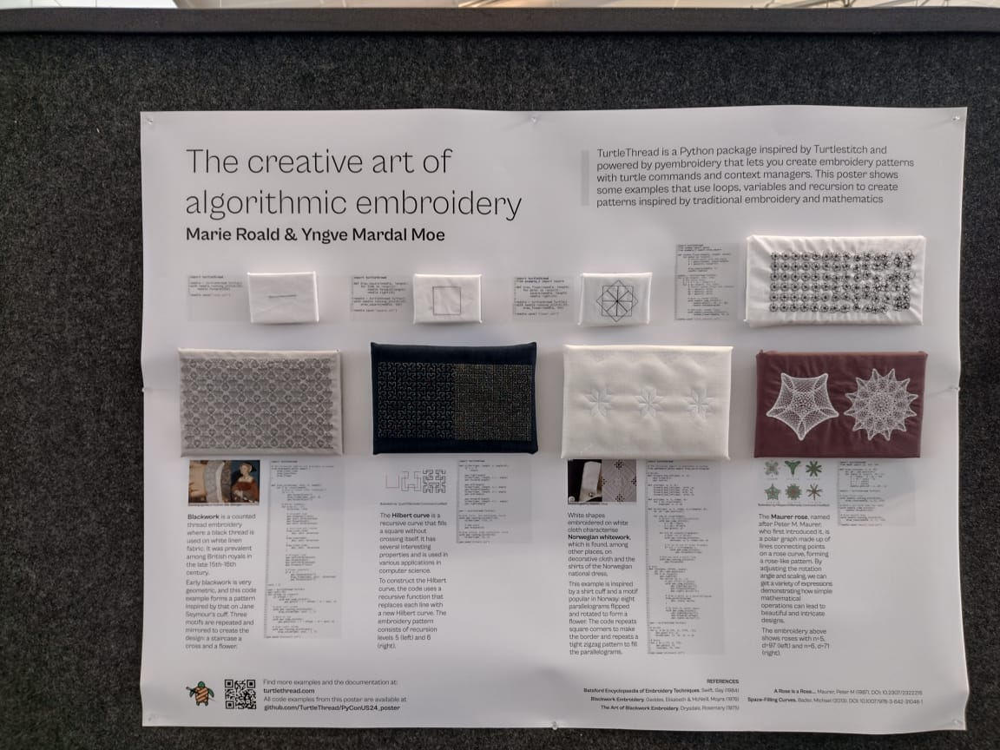
Durante la mañana vi algunas charlas, y por la tarde organicé un Open Space llamado “Data Storytelling 2: Revenge of the Audience” que había propuesto. No conocía el formato de Open Space, y es super potente. Además de las charlas ya organizadas, se ponen a disposición de los asistentes unas 10 salas de tamaño diverso (60 a 100 personas), y dependiendo del ánimo y del interés, se van proponiendo “espacios de colaboración” que pueden tener cualquier forma o intención.
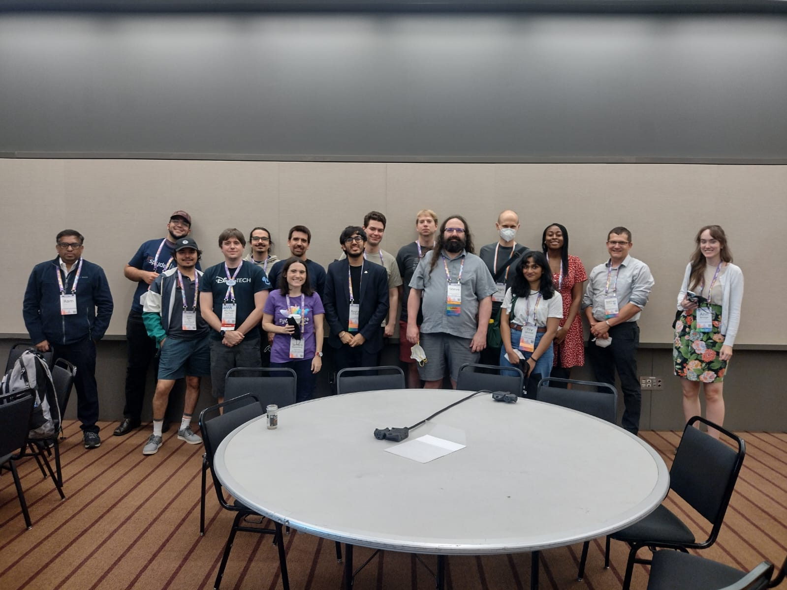
Al Open Space de Data Storytelling llegaron muchas más personas de las que había pensado, creo que fuimos como unas 15 personas. Hablamos de distintos temas:
- Librerías preferidas de visualización de datos.
- Opiniones sobre pie-chart, y otros gráficos.
- Usar renpy para hacer una presentación que sea como una conversación/manga.
- Usar la libraría manim para hacer gráficos de animaciones de matemática.
- Consejos de libros: Creativity Inc, que habla de storytelling en Pixar.
Una de las preguntas más interesante fue “¿Que pasará cuando el futuro cuando la IA generativa pueda hacer una película, comic o libro a partir de un prompt?” Esto significará que como sociedad no tengamos las mismas referencias, y que quizás no sean transferibles.
También nos sacamos fotos de la comunidad Python en español
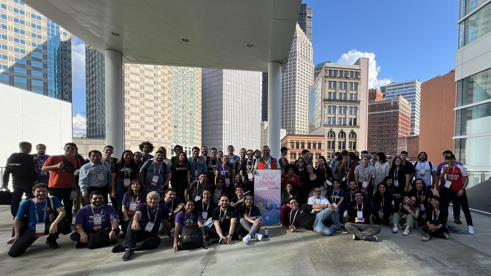
Con Armando fuimos a cenar al Primanti Bros, una sanguchería en Pittsburg que se supone que es extraordinaria pero que palidece en comparación con los sandwichs de Chile, Perú o Argentina.
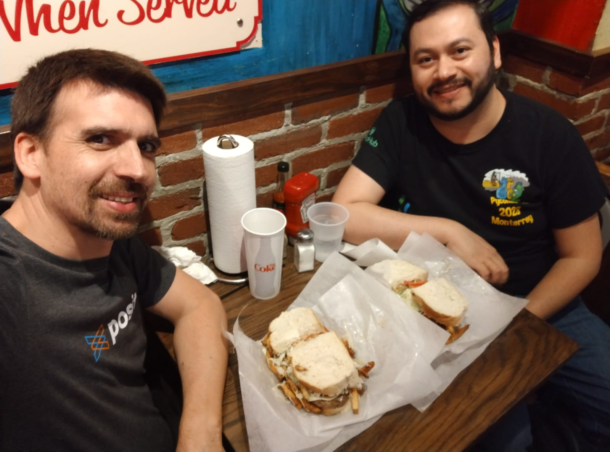
Después nos reunimos con el resto de los pythonistas en una cervecería muy cercana. Ahí conversamos, brindamos hasta que se rompieron vasos, y se regalaron los últimos stickers, peluches y poleras. Un pythonista miraba a lo lejos con cara de “yo también quiero un sticker” así que lo invité a acercarse y tomó algunos stickers para su hija, y nos pusimos a conversar. Él era norteamericano pero hablaba japonés y era muy amigo del grupo de Python Japón, a quienes me presentó, y terminó comprándome unas cervezas. ¡2 stickers por 2 cervezas, es definitivamente el mejor trato que he hecho en la vida! Jajajaja. Me sorprende lo fácil que fue conocer gente y conversar de temas técnicos, cuando normalmente me cuesta muchísimo más hablar con desconocidos o hacer networking.
Y así, llegó el momento de preparar las maletas. Adorné mi maleta con stickers de numfocus, y salí al aeropuerto pensando en que era cierto, que lo había cumplido. Mi sueño de estar en una PyCon US y presentar una charla, en inglés. Que cuando uno piensa en grande y trabaja desde y para una comunidad, se pueden lograr cosas increíbles. Y que he sido muy afortunado de poder llegar hasta aquí, y que eso también significa una enorme responsabilidad para apoyar a que otros puedan atreverse a venir.
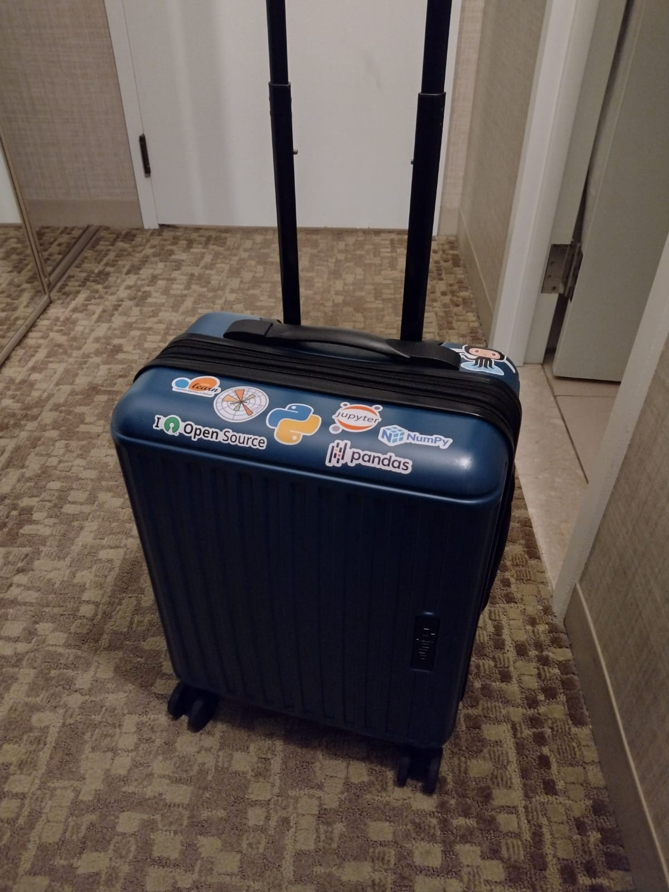